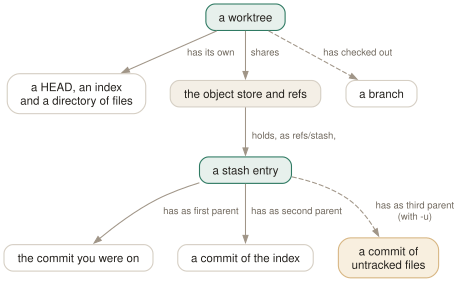

Day 13
Stash and worktrees
Putting work aside: a stash is a commit nobody named, a worktree is a second checkout of the same repository.
By the end of today you can
- stash exactly the changes you mean — staged, unstaged, untracked or one path — and get them back intact
- read a stash as the commit it is, and recover from a pop that conflicted
- take an urgent fix on another branch in a second worktree without disturbing what you had open
A stash is a commit nobody named
git stash looks like a clipboard. It is not: it writes your uncommitted changes as real commits, points refs/stash at them, and resets your working tree. Everything about how stashes behave — what they keep, what they lose, how to recover one — follows from the fact that they are commits with an odd shape and no branch.
$ git stash push -m 'half-done parser'
Saved working directory and index state On main: half-done parser
$ git cat-file -p stash@{0}
tree b2b0d4dad20fa5d7acd7263db2c65251c2a12cd8
parent 1c945ee234a20b74da5c8b5ba036d6220e457bae
parent dcfc219b813e26eb679c8a90bc7d8b0abf94c675
author Ada Example <ada@example.com> 1790319600 +0200
committer Ada Example <ada@example.com> 1790319600 +0200
On main: half-done parser
$ git log --oneline --graph stash@{0}
* 7f88f5c On main: half-done parser
|\
| * dcfc219 index on main: 1c945ee Initial
|/
* 1c945ee Initial
Read it with Day 1's eyes. The entry is a commit whose tree is your working tree. Its first parent is the commit you were on. Its second parent is a separate commit of your index, so the difference between staged and unstaged survives. Stash with -u and a third parent appears holding your untracked files.
stash@{0} is the revision syntax from Day 7: entry n of the reflog of refs/stash. That is the only thing listing your stashes — there is no stash database — which is why git stash drop renumbers everything above it.

HEAD and index looking into the same store. Because the store and refs are shared, a stash made in one worktree is visible in all of them — and a branch can be checked out in only one.Choosing what goes in
The defaults are not “everything”, and that is the source of most stash surprises.
git stash- Staged and unstaged changes to tracked files. Untracked and ignored files stay where they are.
git stash push -m 'msg'- The same, with a message you will recognise in the list. Always give one.
git stash push -u- Also untracked files, as the third parent.
git stash push -a- Also ignored files. Usually wrong: it sweeps up build output and caches.
git stash push --staged- Only what is in the index — handy for setting aside a half-finished commit.
git stash push -- path- Only changes under the given paths.
git stash push -p- Choose hunks interactively, as with
add -p.
Look before you apply: git stash list shows the message and the branch it was made on, git stash show -p stash@{1} the patch. show leaves out the untracked part unless you add --include-untracked.
Getting it back
apply merges an entry into your working tree and keeps it; pop does the same and then drops it. Both restore the working tree only. The staged/unstaged split comes back only with --index:
$ git status -s
M app.txt
M notes.txt
$ git stash && git stash pop
$ git status -s
M app.txt
M notes.txt
When the stash conflicts with what you have done since, pop stops short of dropping:
$ git stash pop
Auto-merging app.txt
CONFLICT (content): Merge conflict in app.txt
The stash entry is kept in case you need it again.
$ git stash list
stash@{0}: WIP on main: 1c945ee Initial
Resolve as for a merge, then drop the entry by hand. If the stash was made long ago and the branch has moved a long way, git stash branch old-work is gentler: it creates a branch at the commit the stash was made on, where it applies without conflict, and drops the entry.
A worktree is a second checkout, not a second clone
The other way to handle an interruption is not to put anything aside. git worktree add checks out another branch into another directory, attached to the same repository. Your editor, your running dev server and your half-typed changes stay exactly where they were.
$ git worktree add ../app-hotfix -b hotfix
Preparing worktree (new branch 'hotfix')
HEAD is now at ff764ed Conflicting edit
$ git worktree list
/home/ada/src/app ff764ed [main]
/home/ada/src/app-hotfix ff764ed [hotfix]
$ cat ../app-hotfix/.git
gitdir: /home/ada/src/app/.git/worktrees/app-hotfix
The new directory has a .git file, not a directory, pointing into .git/worktrees/ of the main repository. Each worktree has its own HEAD, its own index and its own files; everything else — objects, branches, tags, remotes, config, the stash — is shared. A commit made in one is instantly visible from the other, with no fetch.
One rule keeps that sane: a branch can be checked out in only one worktree at a time.
$ git worktree add ../dup main
Preparing worktree (checking out 'main')
fatal: 'main' is already used by worktree at '/home/ada/src/app'
The same protection stops git switch hotfix in the main worktree and git branch -d on a branch another worktree has checked out; git branch marks such branches with +. For a quick look at an old commit, git worktree add --detach ../look v1.0 needs no branch at all.
Today's habit
For an interruption that takes a minute, stash with a message. For anything longer — a review, a hotfix, a long build on another branch — make a worktree next to your main checkout and leave your work alone. Keep a naming convention (../project-hotfix, ../project-review) so git worktree list stays readable.
Tomorrow: ignore rules and attributes — telling git which files to leave alone, and how to treat the ones it keeps.
New vocabulary
Commands
| Command | Does |
|---|---|
git stash push -m <msg> | Save staged and unstaged changes to tracked files as a stash entry, and clean the tree. |
git stash push -u | Include untracked files. -a also takes ignored ones. |
git stash push --staged | Stash only what is in the index. |
git stash list | List entries; stash@{0} is the newest. |
git stash show -p [stash@{n}] | Show an entry as a patch. Add --include-untracked to see its untracked files. |
git stash apply [--index] | Reapply an entry and keep it. --index restores what was staged as staged. |
git stash pop [--index] | Apply, and drop the entry only if it applied cleanly. |
git stash drop [stash@{n}] | Delete one entry. |
git stash branch <name> | Create a branch at the commit the stash was made on, apply it there, drop it. |
git worktree add <path> [-b <new>] [<branch>] | Check out a branch in a new directory that shares this repository. |
git worktree list | List every working tree with its HEAD and branch. |
git worktree remove <path> | Delete a clean worktree. git worktree prune forgets ones you deleted by hand. |
Drillsdo these in a real terminal, today
Self-check
Answer out loud first, then unfold.
You stashed, fixed a bug, and ran git stash pop. It reported a conflict. Is your stashed work gone?
No. pop only drops the entry if it applied cleanly; on conflict it says “The stash entry is kept in case you need it again.” Resolve the conflict as you would a merge (Day 4), then git stash drop yourself. If you would rather start over, git reset --hard and the entry is still in git stash list, untouched.
Before stashing, half of your changes were staged. After git stash pop everything is unstaged. Did git lose information?
No, it chose not to use it. A stash records the index as its own commit (the second parent), but apply and pop restore only the working tree unless you pass --index. The staged state is still in the entry until you drop it.
The default is the cautious one: git-stash(1) warns that --index can fail when there are conflicts, because conflicts are themselves stored in the index, so the staged state has nowhere to go. Without it, a pop succeeds in more cases.
You run git stash to get a clean tree for a quick test, and the test still sees your new config.local file. Why?
Plain git stash takes changes to tracked files only. An untracked file is not a change git knows about, so it stays. git stash push -u takes untracked files too, as a third parent commit; -a also takes ignored ones — build output included, which is usually not what you want.
In a second worktree you run git stash list and see entries you made in the first one. Is that a bug?
No. Worktrees share everything except their own HEAD, index and working files. Refs are shared, and a stash is a ref (refs/stash) with a reflog. So git stash pop in the wrong worktree will cheerfully apply work from the other one. Look at the message (“On main: …”) before popping, or use a branch instead.
Cheat sheet
A stash is a commit; a worktree is a second HEAD and index. Minutes: stash. Longer: worktree.
git stash push -m 'msg' # tracked changes only; always name it
git stash push -u | --staged # + untracked | only the index
git stash list; git stash show -p stash@{1}
git stash pop --index # --index keeps staged as staged
git stash drop stash@{1} # pop keeps the entry if it conflicts
git stash branch NAME # apply where it was made, on a new branch
git worktree add ../dir -b NEW [START] # second checkout, same repo
git worktree add --detach ../look v1.0 # read-only-ish look, no branch
git worktree list; git worktree remove ../dir; git worktree prune
Everything through Day 13
Commands
| Command | Does |
|---|---|
git init -b main | Create an empty repository whose first branch is main. |
git hash-object <file> | Print the object name the file's contents would get. Writes nothing without -w. |
git cat-file -t <object> | Print an object's type: blob, tree, commit or tag. |
git cat-file -p <object> | Pretty-print an object's contents. The one command that shows what git really stores. |
git cat-file -s <object> | Print an object's size in bytes. |
git ls-tree -r <tree-ish> | List every blob in a tree, recursively, with mode and hash. |
git rev-parse HEAD | Turn a name into the full hash it currently means. |
git count-objects -v | Count loose and packed objects and the disk they use. |
git status -s | Show each changed path with two columns: index vs HEAD, then working tree vs index. |
git add <path> | Copy the file's current contents into the index. Writes the blob immediately. |
git add -p | Walk through each hunk and choose which ones go into the index. |
git diff | Show what differs between the index and the working tree — what add would stage. |
git diff --staged | Show what differs between HEAD and the index — what commit would record. |
git restore <path> | Overwrite the working-tree file with the index version. Discards unstaged edits. |
git restore --staged <path> | Reset the index entry to HEAD's version. The working tree is untouched. |
git commit [-a] | Turn the index into a tree, wrap it in a commit, move the branch to it. -a first stages every modified tracked file (never untracked ones). |
git rm --cached <path> | Remove a path from the index only; the file stays on disk, now untracked. |
git branch | List local branches; * marks the one HEAD names. |
git branch -v | List branches with the commit each points at and its subject line. |
git branch <name> | Create a branch at HEAD without switching to it. |
git switch <branch> | Point HEAD at a branch and update the index and working tree to its commit. |
git switch -c <name> | Create a branch at HEAD and switch to it in one step. |
git switch - | Switch back to the branch you were on before. |
git switch --detach <commit> | Point HEAD directly at a commit, with no branch in between. |
git branch -d <name> | Delete a branch, refusing unless it is merged into its upstream (or into HEAD, if it has none). |
git branch -D <name> | Delete a branch unconditionally. |
git branch -m <old> <new> | Rename a branch. |
git merge <branch> | Bring the branch's history into the current one: fast-forward if possible, else a merge commit. |
git merge --ff-only <branch> | Merge only if it is a fast-forward; otherwise refuse and change nothing. |
git merge --no-ff <branch> | Always create a merge commit, even when a fast-forward was possible. |
git merge --abort | Give up a conflicted merge and restore the state before it started. |
git merge-base A B | Print the best common ancestor of two commits — the version a merge compares against. |
git ls-files -u | List the unmerged index entries: one line per stage per conflicted path. |
git show :1:<path> | Show the base version of a conflicted file. :2: is yours, :3: theirs. |
git checkout --conflict=merge <path> | Recreate the conflict markers in a file you mangled; =zdiff3 works too. |
git clone <url> | Copy a repository: all objects, its branches as origin/*, and one local branch checked out. |
git remote -v | List remotes with their fetch and push URLs. |
git remote add <name> <url> | Register another repository under a short name. |
git fetch | Download new objects and move the remote-tracking refs. Never touches your branches or files. |
git pull | Fetch, then integrate the upstream into the current branch. |
git push | Send the current branch's commits and move the branch of the same name on the remote. |
git push -u origin <branch> | Push and record origin/<branch> as this branch's upstream. |
git push origin --delete <branch> | Delete a branch on the remote. |
git branch -vv | List branches with their upstream and ahead/behind counts. |
git log --oneline --graph --all | Draw every branch's history, one line per commit. |
git log -p | Show each commit's diff against its parent. |
git log --stat | Show which files each commit touched, and how much. |
git log --author=<re> --since=<date> | Keep only commits whose author matches, from a date onwards. |
git log -- <path> | Keep only commits that changed the path. The -- separates paths from revisions. |
git log --follow -- <file> | Follow one file's history back through renames. |
git log -S<string> | Pickaxe: keep commits that change how many times the string occurs. |
git log -G<regex> | Keep commits whose diff adds or removes a line matching the regex. |
git log -L :<func>:<file> | Show the history of one function (or -L 10,20:file for a line range). |
git show <commit> | Show one commit: message and diff. |
git blame -w -C <file> | Annotate each line with its last commit, ignoring whitespace and seeing moves between files. |
git rev-parse --verify <rev> | Resolve an expression to one object name, or fail. The checker for everything today. |
git rev-parse --abbrev-ref <rev> | Print the short ref name an expression means: @{u} becomes origin/main. |
git rev-parse --symbolic-full-name <rev> | Print the full ref name, e.g. refs/remotes/origin/main. |
git log A..B | List commits reachable from B but not from A: what B has that A lacks. |
git log --left-right A...B | List commits on either side but not both, marked < or >. |
git diff A...B | Diff from the merge base of A and B to B: what B changed since they split. |
git show <rev>:<path> | Print a file as it was in any commit, without checking anything out. |
git show :<path> | Print the version of a file currently staged in the index. |
git commit --amend | Replace the last commit with a new one built from the current index. Opens the editor. |
git commit --amend --no-edit | Amend, keeping the message: for the file you forgot to add. |
git reset --soft <rev> | Move the branch to rev. Index and working tree untouched. |
git reset <rev> | Move the branch and reset the index to it (--mixed, the default). Working tree untouched. |
git reset --hard <rev> | Move the branch, and overwrite index and working tree to match. Destroys uncommitted work. |
git reset -- <path> | Copy path from HEAD into the index: unstage. The branch does not move. |
git restore --source=<rev> <path> | Overwrite a working-tree file with its version from any commit. |
git revert <commit> | Make a new commit that undoes commit. The safe undo for published history. |
git clean -n | List the untracked files -f would delete. Add -d for directories, -x for ignored files. |
git clean -fd | Delete untracked files and directories. Ignored files survive unless -x. |
git rebase <upstream> | Replay the commits in <upstream>..HEAD on top of upstream. With no argument, uses @{u}. |
git rebase --onto <new> <old> [<branch>] | Replay <old>..<branch> on top of new: transplant part of a branch. |
git rebase --continue | After resolving and git adding a conflict, commit it and go on. |
git rebase --skip | Drop the commit that stopped, and go on. |
git rebase --abort | Put the branch back exactly where it was before the rebase started. |
git push --force-with-lease | Overwrite the remote branch only if it is still where your remote-tracking branch says. |
git push --force-if-includes | With the lease: also refuse if the remote tip was fetched but never integrated locally. |
git rebase -i <base> | Open the todo list for <base>..HEAD in your editor, then run it. |
git rebase --edit-todo | Re-open the remaining todo list while a rebase is stopped. |
git commit --fixup=<commit> | Commit the staged change as fixup! <subject>, to be melted into commit later. |
git commit --fixup=amend:<commit> | Like --fixup, but the squash also replaces the target's message. |
git rebase -i --autosquash <base> | Move every fixup!/squash!/amend! commit under its target and mark it. |
git rebase -x '<cmd>' <base> | Run cmd after every replayed commit; stop at the first failure. |
git range-diff <base> <old> <new> | Pair up the commits of two versions of a branch and show how each changed. |
git reflog | List where HEAD has pointed, newest first, as HEAD@{n} entries. Short for git reflog show HEAD. |
git reflog show <branch> | List where one branch has pointed. Its entries are <branch>@{n}. |
git reflog --date=iso | Show each entry's time instead of its index: main@{2026-09-25 09:00:00 +0200}. |
git log -g | Walk a reflog with the full git log formatting options. |
git reset --hard ORIG_HEAD | Undo the last reset, merge or rebase: go back to where it started. |
git branch <name> <commit> | Give a recovered commit a name again, so it is safe for good. |
git fsck --unreachable | List objects nothing refers to — not even a reflog. Where dropped stashes are found. |
git config list --show-origin --show-scope | List every setting in effect, with the file and scope it came from. |
git config get <name> | Print the value git will use. Exit status 1 if unset. |
git config set [--global] <name> <value> | Write a setting, to the repository's .git/config unless told otherwise. |
git config unset [--global] <name> | Remove a setting from one file. Exit status 5 if it was not there. |
git config edit --global | Open ~/.gitconfig in your editor. |
git -c <name>=<value> <cmd> | Override one setting for one command, above every file. |
git help <alias> | Print what an alias expands to. |
git stash push -m <msg> | Save staged and unstaged changes to tracked files as a stash entry, and clean the tree. |
git stash push -u | Include untracked files. -a also takes ignored ones. |
git stash push --staged | Stash only what is in the index. |
git stash list | List entries; stash@{0} is the newest. |
git stash show -p [stash@{n}] | Show an entry as a patch. Add --include-untracked to see its untracked files. |
git stash apply [--index] | Reapply an entry and keep it. --index restores what was staged as staged. |
git stash pop [--index] | Apply, and drop the entry only if it applied cleanly. |
git stash drop [stash@{n}] | Delete one entry. |
git stash branch <name> | Create a branch at the commit the stash was made on, apply it there, drop it. |
git worktree add <path> [-b <new>] [<branch>] | Check out a branch in a new directory that shares this repository. |
git worktree list | List every working tree with its HEAD and branch. |
git worktree remove <path> | Delete a clean worktree. git worktree prune forgets ones you deleted by hand. |
Options
| Option | Does |
|---|---|
user.name / user.email | Set the identity written into every commit's author and committer lines. |
init.defaultBranch | Name the first branch of every new repository. |
commit.verbose | Show the staged diff below the message in the commit editor. |
branch.sort | Set the default order of git branch; -committerdate puts recent work first. |
merge.conflictStyle | Choose the marker style: merge (default), diff3 or zdiff3. |
pull.ff | only: let git pull fast-forward and refuse anything else. |
push.autoSetupRemote | Make a plain git push of a new branch create it upstream and track it. |
fetch.prune | Delete remote-tracking refs whose branch was deleted on the remote, on every fetch. |
diff.colorMoved / diff.colorMovedWS | Colour moved blocks differently from added and removed ones; allow-indentation-change still recognises a re-indented move. |
push.useForceIfIncludes | Make every --force-with-lease behave as if --force-if-includes were given. |
rebase.autoSquash | Make rebase -i autosquash by default. Interactive mode only. |
rebase.updateRefs | Also move any branch that points into the rebased range (--update-refs). |
gc.reflogExpire | Age after which reflog entries are pruned. Default 90 days. |
gc.reflogExpireUnreachable | Same, for entries no longer reachable from the ref's tip. Default 30 days. |
core.logAllRefUpdates | Whether reflogs are kept. True by default with a working tree, false in a bare repository. |
includeIf."gitdir:<dir>/".path | Read another config file only for repositories under dir. |
alias.<name> | Define git <name>. A leading ! makes it a shell command. |
GIT_CONFIG_GLOBAL | Read this file instead of ~/.gitconfig; /dev/null for none. |
GIT_PREFIX | Set for shell aliases: the directory you ran them from, relative to the top level. |